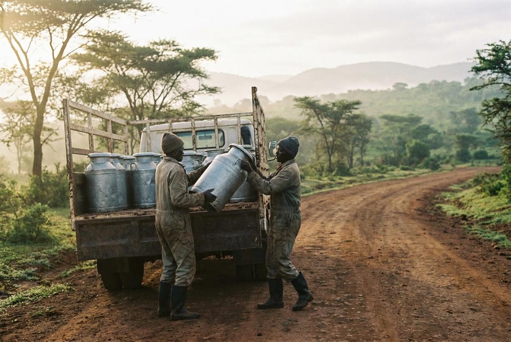

Our History
Ereteti Dairy Sacco was established to empower local farmers through community effort and reliable milk collection.
From simple beginnings, we have expanded our services across Kajiado County.

We started with nine farmers and one cooler. The ledger was a school exercise book.